Windows 10 File Associations: Set, Change and Remove Easily
Getting Windows 10 file associations to work can really be a pain. Just mapping a PDF to work with Acrobat can be a challenge with Windows 10. Or getting MAILTO to work with outlook. This used to work great in Windows 7 with Group Policy, but not anymore. To change Windows 10 File Associations you need Netwrix Endpoint Policy Manager (formerly PolicyPak) File Associations Manager, which can be seen in this demo.
Set, Change and Remove Windows 10 File Associations
Hi. This is Jeremy Moskowitz, former Group Policy MVP and Founder of Endpoint Policy Manager Software. In this article, I'm going to show you how you can manage Windows 10 file associations using Endpoint Policy Manager File Associations Manager.
Before Getting Started with Windows 10 File Associations Management
Before getting started with Windows 10 file associations management, I want to show you that I have two very similar machines. This first machine is going to represent your machine, Mr. or Ms. Admin's machine. The second machine represents Mr. or Ms. endpoint machine, the person who actually uses stuff.
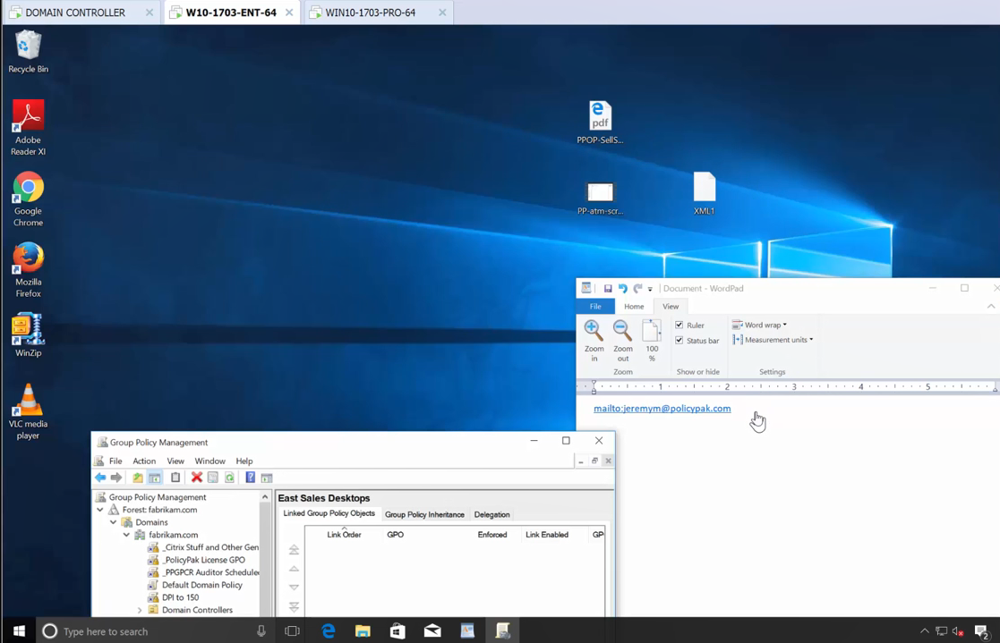
Figure 1: Admin Machine
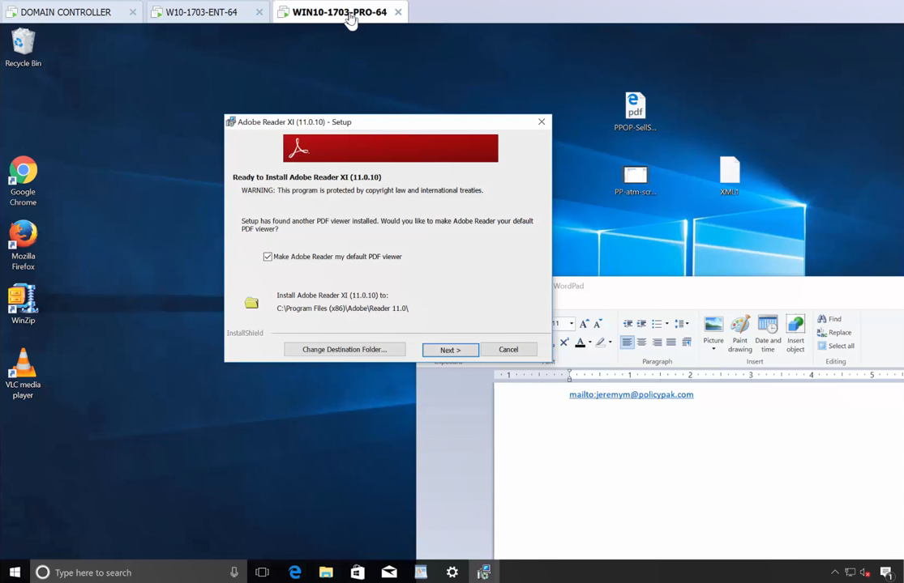
Common Windows 10 File Association Issues
Both machines are very similar, but I actually want to demonstrate sever Windows 10 file association issues that you've probably seen and have driven you crazy.
Problem #1: Change Windows 10 File Associations for PDF
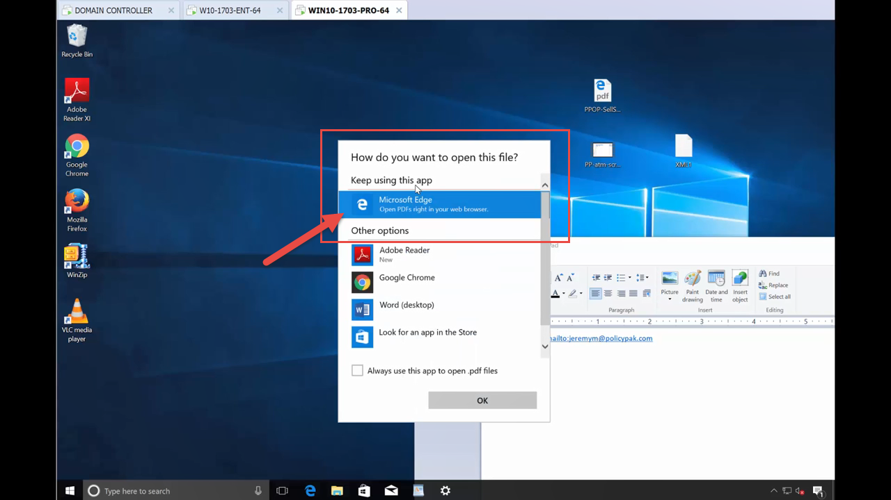
Figure 3: Trying to set Windows 10 file associations for PDF to Adobe Reader always reverts back to Microsoft Edge
Have you noticed that when you have a PDF in Windows 10, the default viewer for a PDF keeps prompting you for "Microsoft Edge"? You might even install a third-party PDF reader like Acrobat Reader.
Even if you install a third-party PDF reader like Acrobat Reader, the Windows 10 file association manager asks you if you want to make Adobe Reader the default PDF viewer"? Although, you can go ahead and say yes, it does absolutely nothing. You can do a Google search for "hijak," "PDF," and "Edge," and find that many people have experienced a similar issue. It's a very extensive problem, one that you have likely seen.
Problem #2: Change Windows 10 File Associations for MP4
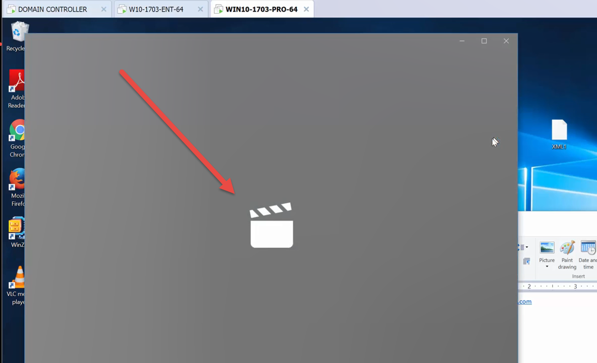
Figure 4: Windows 10 file association for MP4 defaults to Microsoft's movie player
Another Windows 10 file association challenge you have likely seen is MP4 files. By default, your Windows file association for MP4s is Microsoft's movie player. It's probably not what you wanted. You may want to have an application like "VLC media player" or some other player that you've installed. How do you automatically get users to connect to that? That's another big problem.
Problem #3: Change Windows 10 File Associations for MAILTO
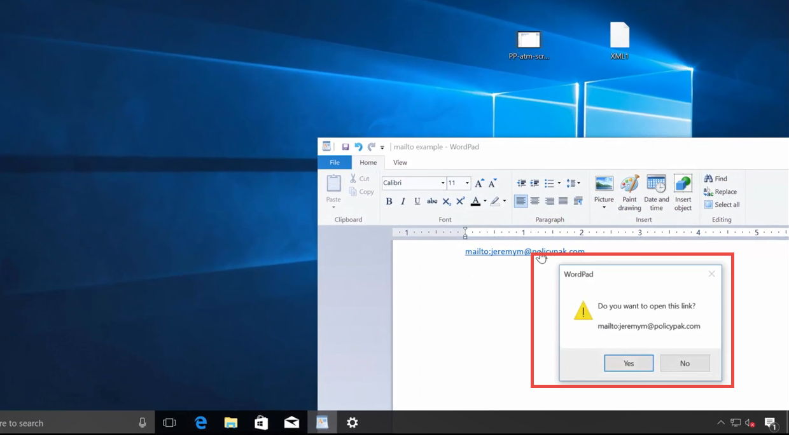
Figure 5: Prompt for MAILTO asking if you want to email this person
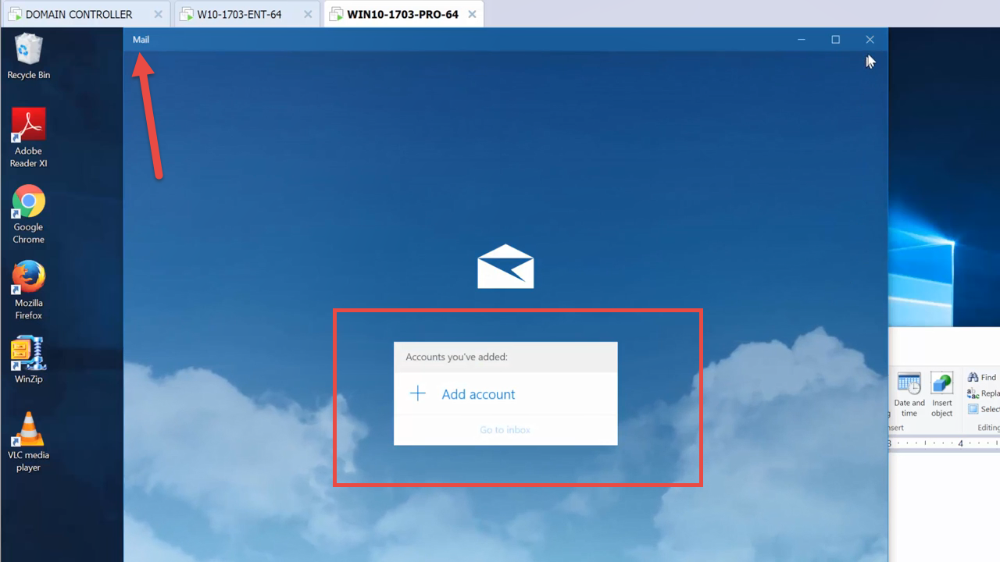
Figure 6: The Windows 10 file association for MAILTO is Microsoft's built-in mailer
How about MAILTO? If you receive a text file that has an email address in it, and you click it, Microsoft's built-in mailer shows up. That's likely not what you want, as Outlook is far more likely.
Problem #4: Set Windows 10 File Associations for Unknown Applications
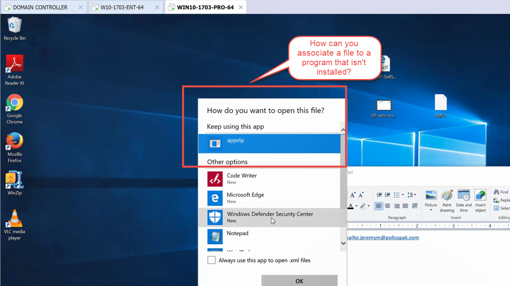
Figure 7: Set Windows 10 file associations for unknown applications
Lastly, another problem is when you have a certain Windows 10 file type for an application that has no good reader installed. For example, your developers may use something like Notepad++ and might not even have it installed. How can you associate windows 10 files with a program that's not even installed?
As you can see in the screenshot below, I have Notepad++ on the endpoint machine. It's located in the C drive in a folder called "Notepad++Portable." In order to use that XML, I'd have to open up "Notepad++Portable." I'd then have to drag that file in. It's just too much work. It would be great if I could just simply double click it and see the file, but as you can see, there's no extension there.
How to Change Windows 10 File Associations with Endpoint Policy Manager File Associations Manager
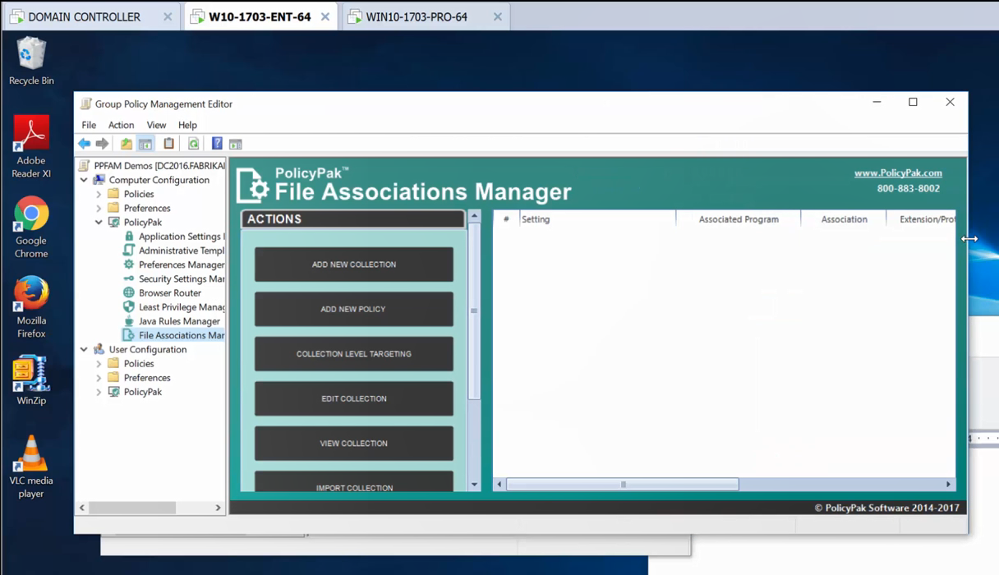
Figure 8: Endpoint Policy Manager File Associations Manager for Windows 10
Step #1: Start with the Group Policy Management Console (GPMC)
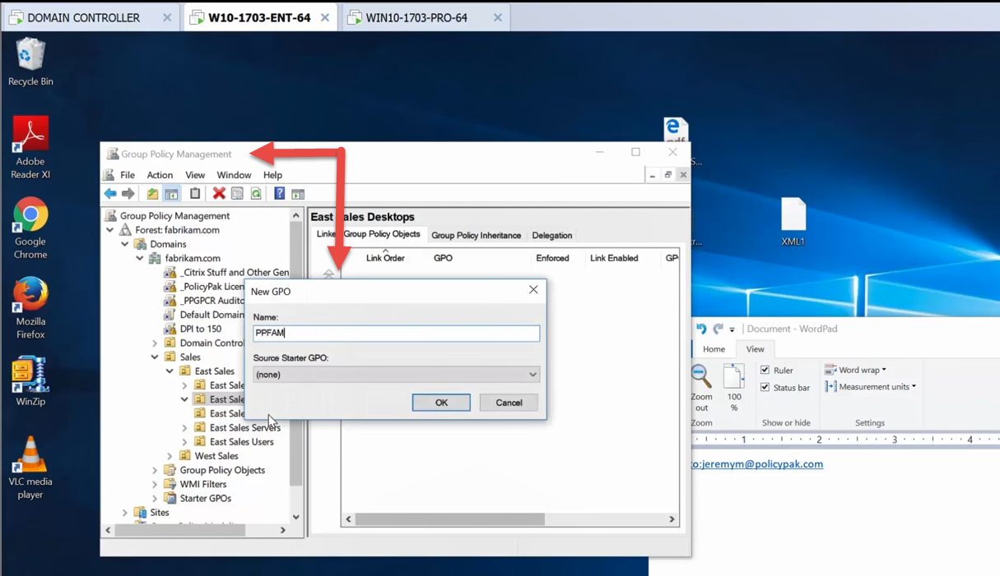
Figure 9: Using the Group Policy Management Console to create a new GPO
I'm going to solve all four of those problems with one swing, and here's how we're going to do it. This is now your machine, the person that has the GPMC and also has the same applications. The best way to do File Associations Manager with Endpoint Policy Manager is for you to have the same applications on your machine or to utilize a machine that has the same applications.
To get started here, I'm going to use the GPMC. For all of my "East Sales Desktops," I'm going to create a GPO in this domain, and link it. The GPO is called "PPFAM Demos." The acronym PPFAM is for Endpoint Policy Manager File Associations Manager. Once I right click and click "Edit," we'll knock out all four problems.
Step 2: Create Windows 10 File Association Policy for PDF to Acrobat
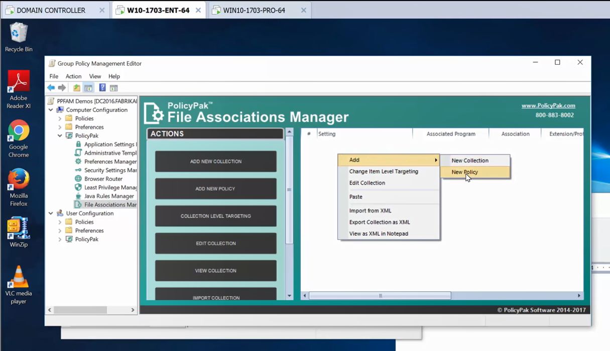
Figure 10: Creating a Policy with Endpoint Policy Manager File Associations Manager
Endpoint Policy Manager File Associations Manager is on the computer side, and we'll dive into that below. The first thing we want to do is associate Acrobat with PDF. We'll right-click, "Add/New Policy" here. We'll call this "PDF to Acrobat."
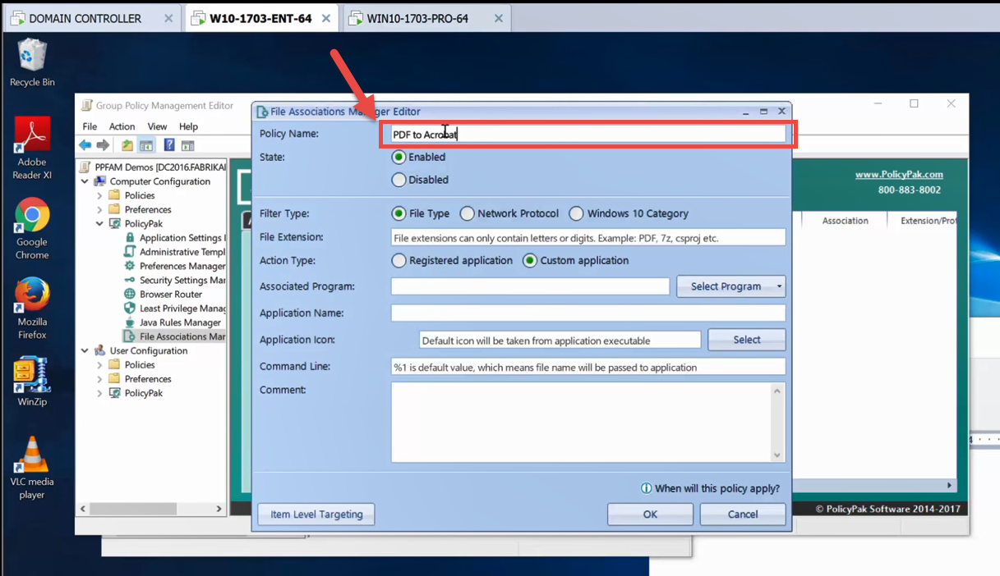
Figure 11: Creating a Windows 10 File Association Policy for PDF to Acrobat
We're going to be using a "File Type." The Windows 10 file association is going to be for "PDF." We're going to use a "Registered application." I'll explain what "Custom application" is in a second. We'll "Select Program." Again, it's best if you're on a machine that has this. Look at that: "PDF." We find it pretty fast. We'll use the Acrobat "Adobe Reader" that's on this machine. It's as simple as that. You can click "OK," and there we go. You've solved that problem.
Step 3: Change Windows 10 File Association Policy for MP4 to VLC Media Player
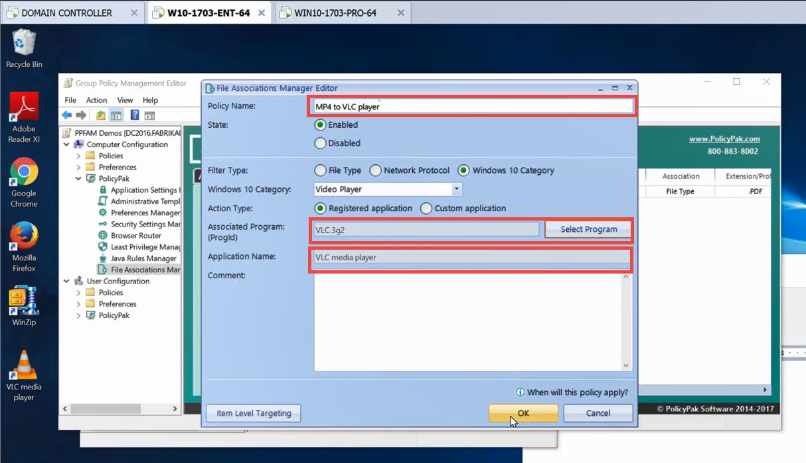
Figure 12: Change Windows 10 File Association for MP4 to VLC Player
The second thing we said we wanted to do was movies. If we wanted to create a Windows 10 file association from MP4 to VLC player, we can then do a "Windows 10 Category" if we want to. We can just say the "Video Player" itself will be a "Registered application." We have "VLC media player" on this machine, so we'll go ahead and "Select Program." There we go. We'll just go ahead and pick "VLC media player," and you've solved that problem.
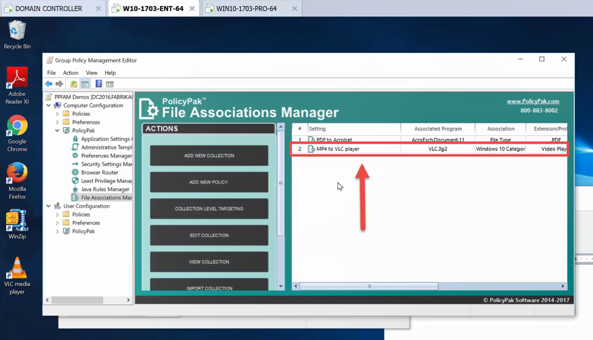
Figure 13: MP4 is now associated with VLC Media Player
Step 4: Set Windows 10 File Association Policy for Mailto to Outlook
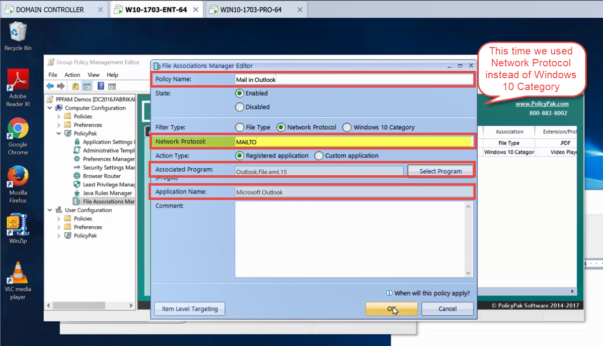
Figure 14: Use Network protocol MAILTO and set Windows 10 file association to Outlook
Then we'll go ahead and "Add/New Policy" here, this time to open up the "Mail in Outlook." How are we going to do that? This time it's a "Network Protocol." Actually, there are two ways to do this. You could do the "Windows 10 file association of "Email." That's fine. I'm just going to switch and try something a little different here. I'm going to show you "Network Protocol."
This protocol is called "MAILTO." If somebody clicks on a link that says "mailto:" you want it to run another "Registered application." Which one? I happen to have Outlook already preinstalled on this machine.
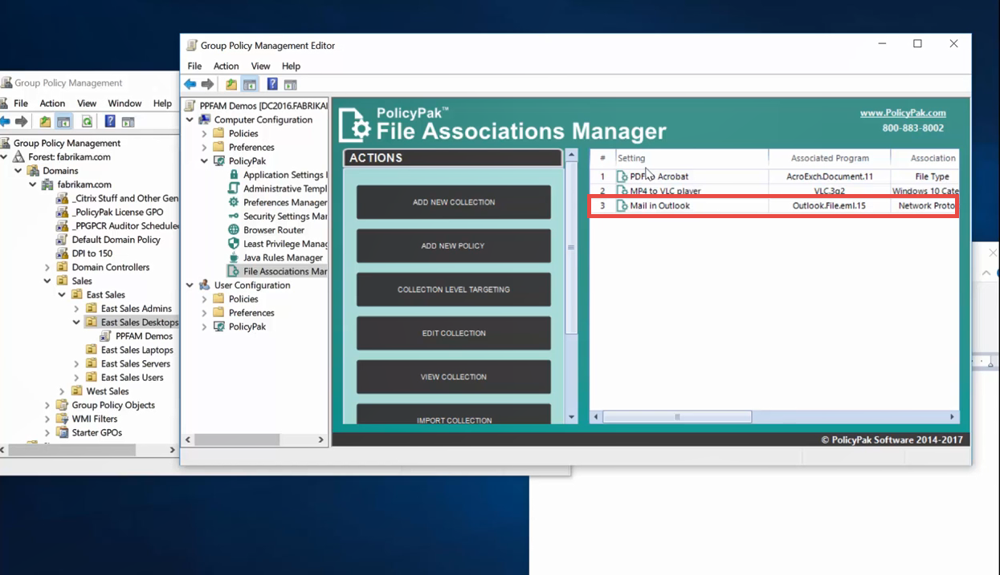
Figure 15: Setting Windows 10 File Association from MAILTO to Outlook with Endpoint Policy Manager
There we go. I'll go ahead and change the Windows 10 file association to "Microsoft Outlook" and click "OK," and you've solved that problem right there.
Step 5: Set Windows 10 File Associations for Notepad++
Then the last Windows 10 file association we want to do is to "Add Policy" that says "XML to Notepad++."
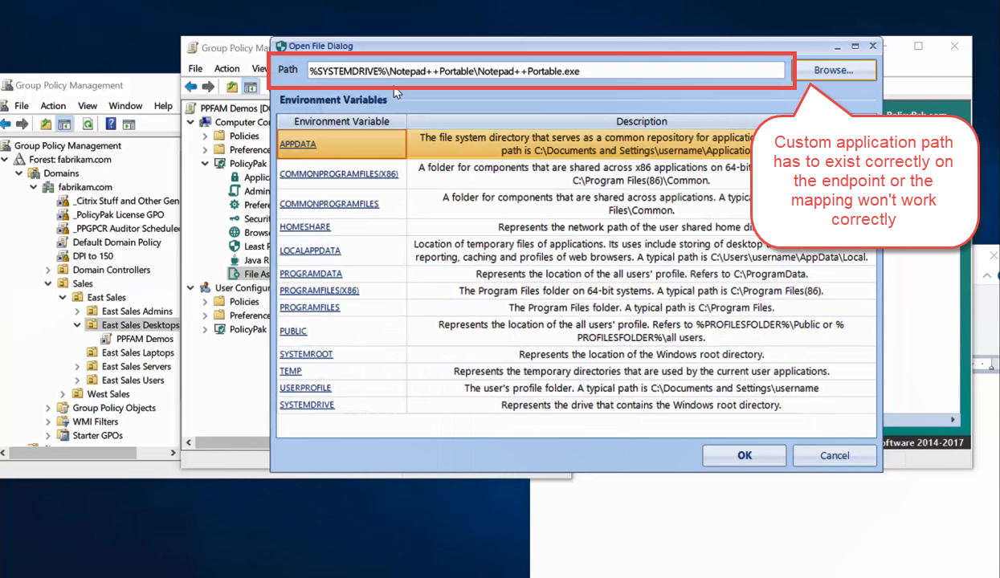
Figure 17: Use a custom application to set Windows 10 File Associations for Notepad++
This time, we're going to use "Custom application." Why Custom? Because Custom is better for when you have a program that isn't actually installed or registered. In other words, there's no way for Windows to see that XML should be associated with Notepad++.
We're just going to "Select Program" "From EXE file." Again, this path has to exist correctly on the endpoint or this isn't going to work. I'm going to "Browse" for it on my machine. It's the same as the target machine: "c:Notepad++PortableNotepad++Portable.exe." We automatically put in "%SYSTEMDRIVE%" and all that stuff. You can see, we have the "Path" all settled in.
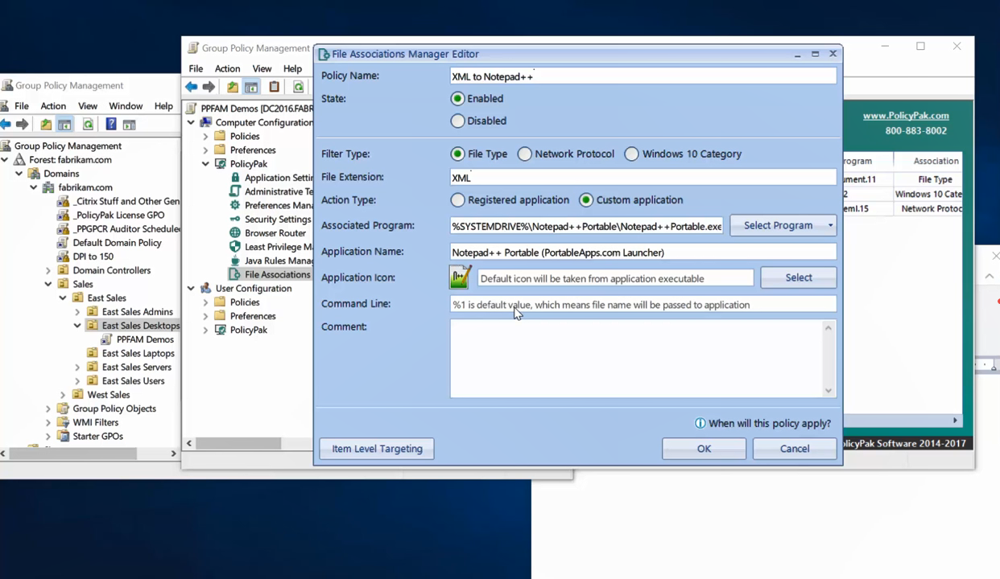
Figure 18: Change Windows 10 File Associations for Notepad++ to XML
Now we're saying "XML to Notepad++." We're going to pass in the file name automatically. You don't have to do anything. But if you want to run "Command Line" like if it's going to be an application that requires command line arguments, you can put in your own things here. Just be sure to put in "%1" to pass in where the file should go in that command line argument. We'll go ahead and click "OK," and that's it. There are all of our rules, all four things said and done.
Step 6: Run GP Update to Set Windows 10 File Associations Changes
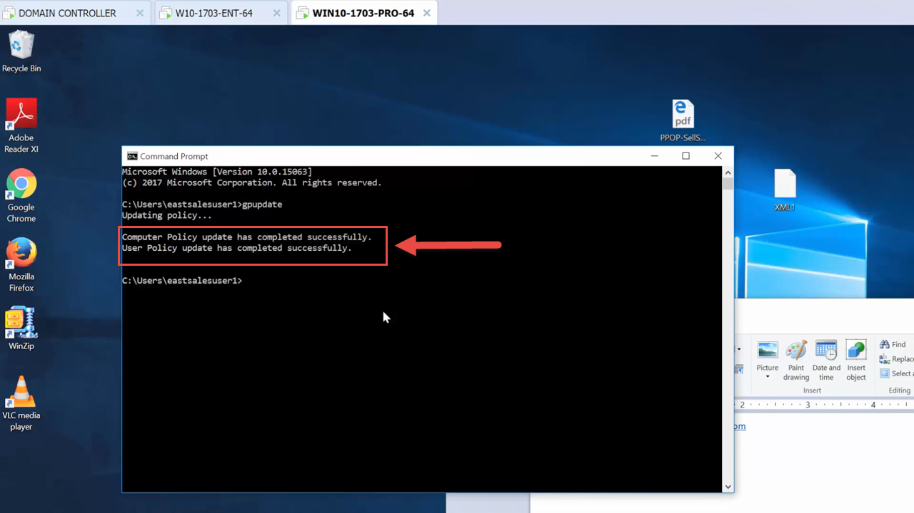
Run GP Update to set Windows 10 file associations changes
You might wonder when these things are going to apply. What I'm going to do is go over to this endpoint here and run GP Update ("gpupdate"). You have to do a Group Policy Update first and after GP Update is successful, it doesn't really kick in until you log off and log back on. That's when the magic kicks in, when you log off and log back on, or for any new user who has never logged on. In that way, it works perfectly for first-time users right out of the gate. So that part is good as well.
Okay, that's all finished. You can see that there are no changes here. Keep your eye on these three icons. What we're going to do right now is we're going to log out ("Sign out") and log back on. Just like that, you can see the icon for the PDF has changed, the icon for the MP4 has changed. The icon for the XML has also changed even though Notepad++ is not actually installed.
Sign Up for our webinar or contact us to fix Windows 10 file associations problems
Get started by attending our daily webinar. Not only will this webinar review of how Endpoint Policy Manager simplifies Windows 10 File Associations, but it also demonstrates the software's other features. Once you've seen the webinar, we'll hand over the bits so you can start a free 14-day trial. During your evaluation, a Windows 10 File Associations specialist will be available to help you with your project.